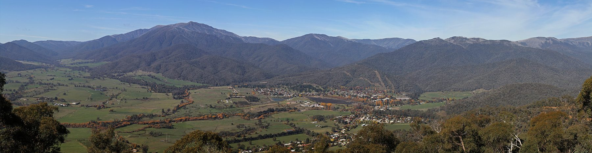

Mt Beauty stopover
Kiewa Valley · 20–30 min photo and leg stretch
- Drive
- Melbourne → Mt Beauty → Falls Creek~4 h to Mt Beauty, then ~35–40 min up to the resort to confirm
- Do
- 0.4 h · Free
- Fuel and snow-chain hire here, as the resort has no fuel
- Stay
- Not overnight, unless snow is poor: Mt Beauty cabins as the base for Falls Creek day trips
to confirm Lookout access and the best drive-in direction